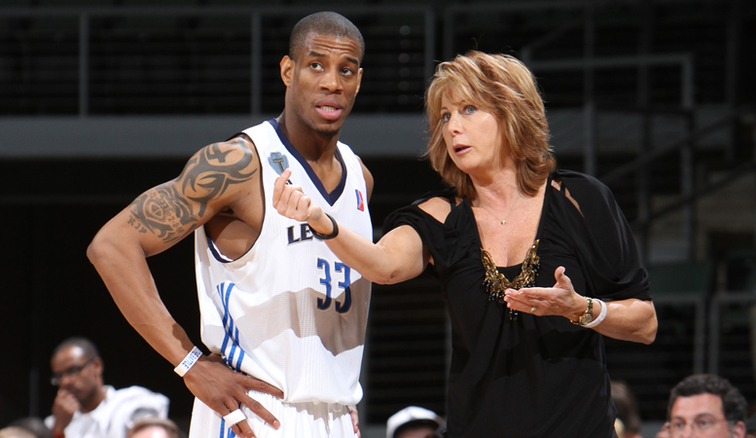
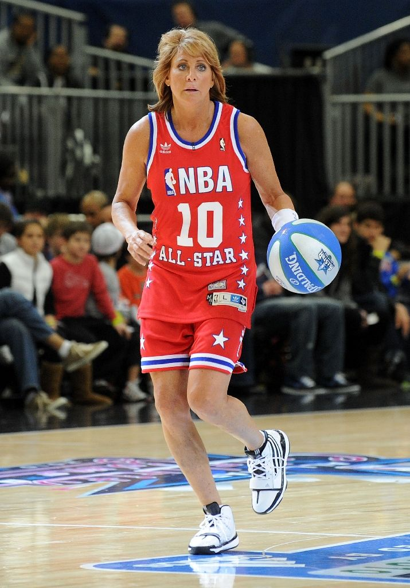

Biography
Nancy Elizabeth Lieberman was a professional basketball player who played and also coached in the WNBA. Growing up, Lieberman had the natural ability to compete in the male-dominated New York City basketball scene. She was the first female to play in a men’s professional league, signing with the Springfield Fame of the United States Basketball League in 1986 She was known for her precision passing and tenacious defense as well as her accurate shooting touch. In the early 1980s, professional basketball offered few, if any, opportunities for women. 